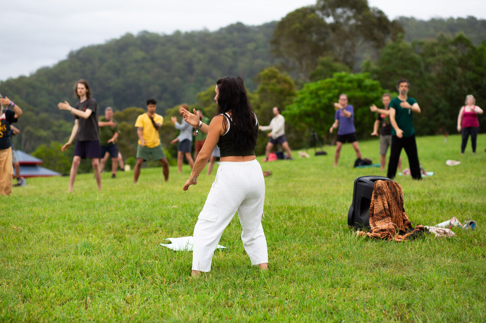
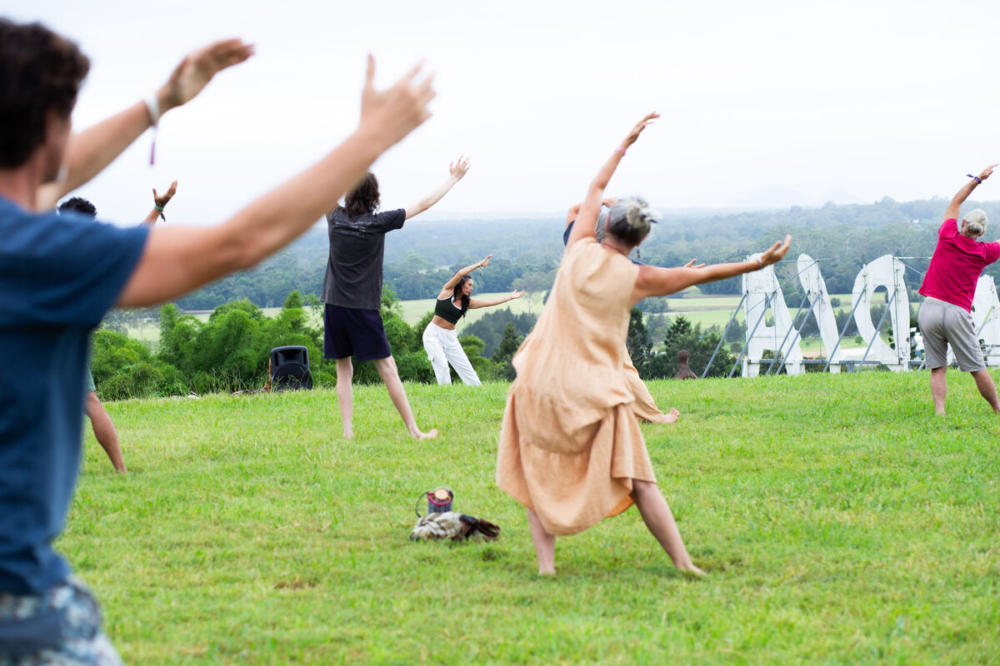

Learn from anywhere with our online courses designed to bring holistic movement practices into your home.
We're busy building the ultimate video library. Check back soon!
Click on any course to learn more about what's included
Buid your foundation and master 4 essential pillars to create a consistent qigong practice
Qigong translates to "cultivation of life energy"—the art and science of working with Qi, the vital force that animates all living things. But for the beginner, this concept can feel abstract or mystical. This course is designed to demystify Qigong by building a solid, experiential foundation.
Over four weeks, you will not just learn movements; you will learn how to feel, how to breathe, how to stand, and how to flow. Building a personal practice from the ground up, discovering that Qigong is not about achieving perfect external forms, but about cultivating a felt sense of aliveness, calm, and connection.
This comprehensive course covers:
Duration: 4 weeks
Level: All levels welcome
Includes: Video library + PDF guides

Learn tangible Qigong forms while deepening your understanding of the profound relationship between movement and stillness
Duration: 5 weeks
Level: All levels welcome—no prior Qigong experience necessary
Includes:
Sign up below to be the first to know when we launch.
Join E-mail List